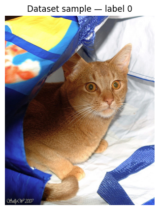
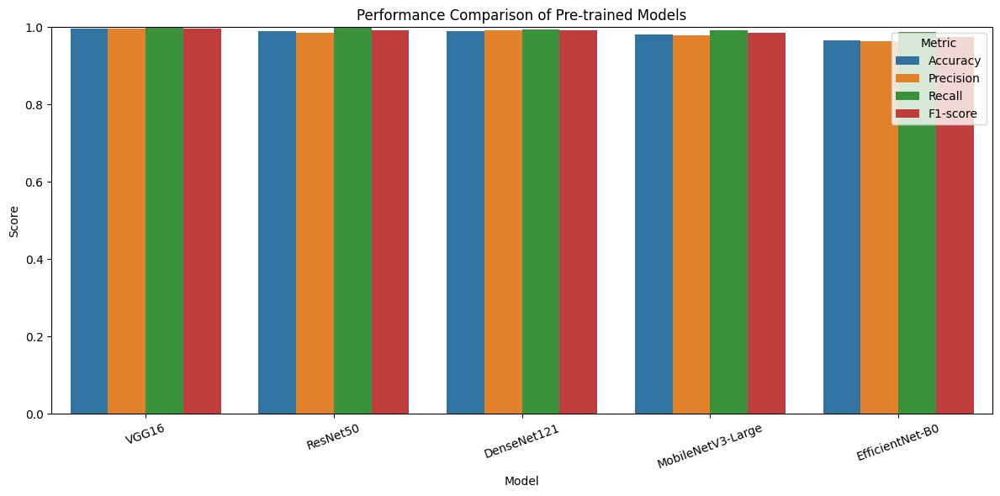
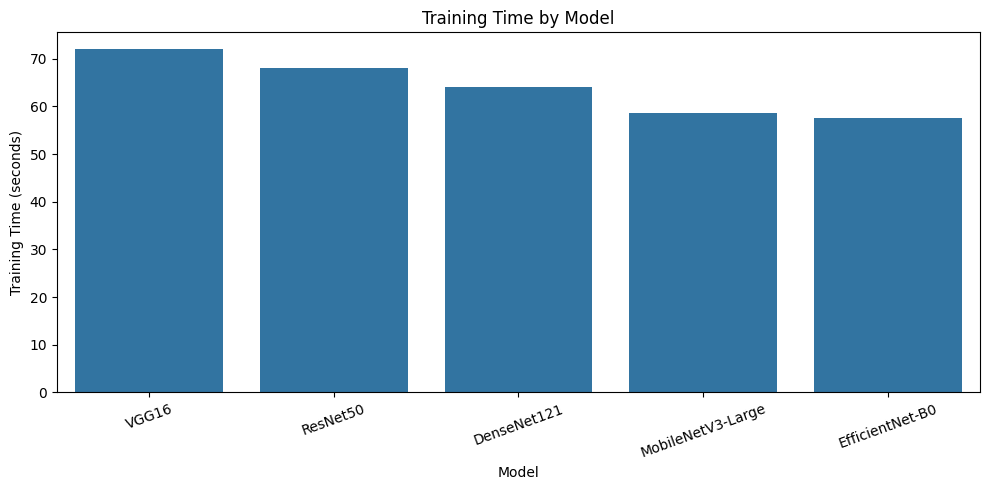
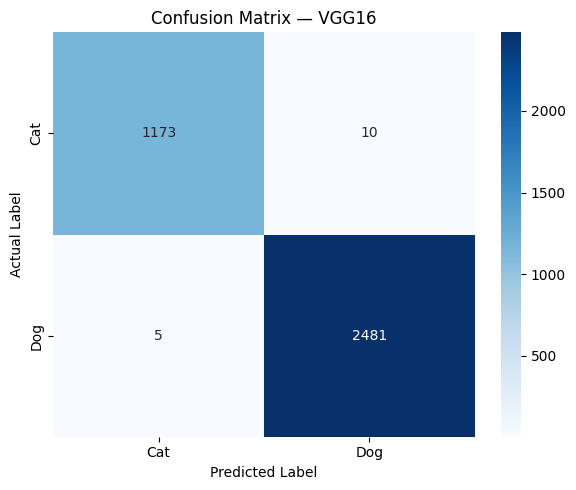

Laboratory Exercise (Model Inference on Custom Dataset)#
Step 1 — Choose and understand the dataset#
I recommend the Oxford-IIIT Pet Dataset, available through torchvision. It contains images of cats and dogs, so we can automatically download the data instead of manually collecting and sorting hundreds of images. We’ll use its binary cat-versus-dog labels.
Step 2 — Install and import the libraries#
!pip install -q torch torchvision scikit-learn pandas matplotlib seaborn
import os
import random
import time
import copy
import numpy as np
import pandas as pd
import matplotlib.pyplot as plt
import seaborn as sns
import torch
import torch.nn as nn
from torch.utils.data import Dataset, DataLoader, random_split
from torchvision import datasets, transforms, models
from sklearn.metrics import (
accuracy_score,
precision_score,
recall_score,
f1_score,
classification_report,
confusion_matrix
)
SEED = 42
random.seed(SEED)
np.random.seed(SEED)
torch.manual_seed(SEED)
if torch.cuda.is_available():
torch.cuda.manual_seed_all(SEED)
device = torch.device("cuda" if torch.cuda.is_available() else "cpu")
print("Using device:", device)
print("PyTorch version:", torch.__version__)
Using device: cuda
PyTorch version: 2.11.0+cu130
This cell imports the libraries and sets a random seed to help make the experiment reproducible. A GPU is helpful because we’ll train five models.
Step 3 — Download and inspect the dataset#
data_root = "./data"
trainval_base = datasets.OxfordIIITPet(
root=data_root,
split="trainval",
target_types="binary-category",
download=True
)
test_base = datasets.OxfordIIITPet(
root=data_root,
split="test",
target_types="binary-category",
download=True
)
print("Training/validation images:", len(trainval_base))
print("Testing images:", len(test_base))
100%|██████████| 792M/792M [00:37<00:00, 20.9MB/s]
100%|██████████| 19.2M/19.2M [00:02<00:00, 9.50MB/s]
Training/validation images: 3680
Testing images: 3669
The official dataset provides separate trainval and test splits. We’ll divide trainval into training and validation subsets, while keeping the test data separate until final evaluation.
image, label = trainval_base[0]
print("Image type:", type(image))
print("Image size:", image.size)
print("Original binary label:", label)
plt.figure(figsize=(5, 5))
plt.imshow(image)
plt.title(f"Dataset sample — label {label}")
plt.axis("off")
plt.show()
Image type: <class 'PIL.Image.Image'>
Image size: (394, 500)
Original binary label: 0

The original binary labels are typically 1 for cats and 2 for dogs in torchvision’s implementation. We’ll convert them to 0 and 1 in our custom dataset so the model outputs correspond to cat and dog.
Step 4 — Create a custom PyTorch Dataset class#
class CustomDataset(Dataset):
def __init__(self, dataset, transform=None):
self.dataset = dataset
self.transform = transform
def __getitem__(self, idx):
image, label = self.dataset[idx]
# Keep the existing binary labels: 0 = cat, 1 = dog
label = int(label)
if self.transform:
image = self.transform(image)
return image, torch.tensor(label, dtype=torch.long)
def __len__(self):
return len(self.dataset)
init() stores the underlying dataset and any image transformations.
getitem() loads an image and its label, transforms the image, and returns the image tensor and numeric label.
len() returns the total number of images.
Labels become 0 = cat and 1 = dog.
Step 5 — Split the training data#
train_size = int(0.8 * len(trainval_base))
val_size = len(trainval_base) - train_size
train_subset, val_subset = random_split(
trainval_base,
[train_size, val_size],
generator=torch.Generator().manual_seed(SEED)
)
print("Training samples:", len(train_subset))
print("Validation samples:", len(val_subset))
print("Test samples:", len(test_base))
Training samples: 2944
Validation samples: 736
Test samples: 3669
We’ll use 80% of the training/validation split for training and 20% for validation. The separate test set will be used for the final model comparison.
Step 6 — Create DataLoaders#
def make_transforms(weights):
preprocess = weights.transforms()
size = preprocess.crop_size
if isinstance(size, (tuple, list)):
size = size[0]
mean = preprocess.mean
std = preprocess.std
train_transform = transforms.Compose([
transforms.Resize((size, size)),
transforms.RandomHorizontalFlip(),
transforms.ToTensor(),
transforms.Normalize(mean=mean, std=std)
])
eval_transform = preprocess
return train_transform, eval_transform
def make_loaders(weights, batch_size=32):
train_transform, eval_transform = make_transforms(weights)
train_dataset = CustomDataset(
train_subset, transform=train_transform
)
val_dataset = CustomDataset(
val_subset, transform=eval_transform
)
test_dataset = CustomDataset(
test_base, transform=eval_transform
)
generator = torch.Generator().manual_seed(SEED)
train_loader = DataLoader(
train_dataset,
batch_size=batch_size,
shuffle=True,
num_workers=2,
pin_memory=torch.cuda.is_available(),
generator=generator
)
val_loader = DataLoader(
val_dataset,
batch_size=batch_size,
shuffle=False,
num_workers=2,
pin_memory=torch.cuda.is_available()
)
test_loader = DataLoader(
test_dataset,
batch_size=batch_size,
shuffle=False,
num_workers=2,
pin_memory=torch.cuda.is_available()
)
return train_loader, val_loader, test_loader
weights = models.ResNet50_Weights.DEFAULT
train_loader, val_loader, test_loader = make_loaders(weights)
images, labels = next(iter(train_loader))
print("Image batch shape:", images.shape)
print("Label batch shape:", labels.shape)
print("Labels in batch:", labels[:10].tolist())
Image batch shape: torch.Size([32, 3, 224, 224])
Label batch shape: torch.Size([32])
Labels in batch: [0, 1, 0, 1, 1, 1, 1, 0, 1, 1]
Step 7 — Load the five pre-trained models#
We will keep the pre-trained feature extractors frozen and train only the final classification layers. This makes the comparison more manageable and reduces training time.
def build_model(model_name):
if model_name == "ResNet50":
weights = models.ResNet50_Weights.DEFAULT
model = models.resnet50(weights=weights)
in_features = model.fc.in_features
model.fc = nn.Linear(in_features, 2)
elif model_name == "MobileNetV3-Large":
weights = models.MobileNet_V3_Large_Weights.DEFAULT
model = models.mobilenet_v3_large(weights=weights)
in_features = model.classifier[3].in_features
model.classifier[3] = nn.Linear(in_features, 2)
elif model_name == "EfficientNet-B0":
weights = models.EfficientNet_B0_Weights.DEFAULT
model = models.efficientnet_b0(weights=weights)
in_features = model.classifier[1].in_features
model.classifier[1] = nn.Linear(in_features, 2)
elif model_name == "DenseNet121":
weights = models.DenseNet121_Weights.DEFAULT
model = models.densenet121(weights=weights)
in_features = model.classifier.in_features
model.classifier = nn.Linear(in_features, 2)
elif model_name == "VGG16":
weights = models.VGG16_Weights.DEFAULT
model = models.vgg16(weights=weights)
in_features = model.classifier[6].in_features
model.classifier[6] = nn.Linear(in_features, 2)
else:
raise ValueError(f"Unknown model: {model_name}")
# Freeze the pre-trained feature extractor
for param in model.parameters():
param.requires_grad = False
# Train only the newly replaced classification layer
if model_name == "ResNet50":
for param in model.fc.parameters():
param.requires_grad = True
elif model_name == "MobileNetV3-Large":
for param in model.classifier[3].parameters():
param.requires_grad = True
elif model_name == "EfficientNet-B0":
for param in model.classifier[1].parameters():
param.requires_grad = True
elif model_name == "DenseNet121":
for param in model.classifier.parameters():
param.requires_grad = True
elif model_name == "VGG16":
for param in model.classifier[6].parameters():
param.requires_grad = True
return model, weights
model, weights = build_model("ResNet50")
print(model.__class__.__name__)
print("Trainable parameters:",
sum(p.numel() for p in model.parameters()
if p.requires_grad))
Downloading: "https://download.pytorch.org/models/resnet50-11ad3fa6.pth" to /root/.cache/torch/hub/checkpoints/resnet50-11ad3fa6.pth
100%|██████████| 97.8M/97.8M [00:00<00:00, 211MB/s]
ResNet
Trainable parameters: 4098
Step 8 — Define the training and validation functions#
def run_epoch(model, loader, criterion, optimizer=None):
is_training = optimizer is not None
model.train() if is_training else model.eval()
total_loss = 0.0
all_preds = []
all_labels = []
with torch.set_grad_enabled(is_training):
for images, labels in loader:
images = images.to(device)
labels = labels.to(device)
if is_training:
optimizer.zero_grad()
outputs = model(images)
loss = criterion(outputs, labels)
if is_training:
loss.backward()
optimizer.step()
total_loss += loss.item() * labels.size(0)
preds = outputs.argmax(dim=1)
all_preds.extend(preds.cpu().numpy())
all_labels.extend(labels.cpu().numpy())
avg_loss = total_loss / len(loader.dataset)
accuracy = accuracy_score(all_labels, all_preds)
return avg_loss, accuracy
def train_model(model, train_loader, val_loader, epochs=3):
model = model.to(device)
criterion = nn.CrossEntropyLoss()
optimizer = torch.optim.Adam(
[p for p in model.parameters() if p.requires_grad],
lr=0.001
)
best_val_accuracy = -1
best_state = copy.deepcopy(model.state_dict())
history = []
for epoch in range(epochs):
train_loss, train_acc = run_epoch(
model, train_loader, criterion, optimizer
)
val_loss, val_acc = run_epoch(
model, val_loader, criterion
)
history.append({
"epoch": epoch + 1,
"train_loss": train_loss,
"train_accuracy": train_acc,
"val_loss": val_loss,
"val_accuracy": val_acc
})
print(
f"Epoch {epoch + 1}/{epochs} | "
f"Train loss: {train_loss:.4f} | "
f"Train accuracy: {train_acc:.4f} | "
f"Val loss: {val_loss:.4f} | "
f"Val accuracy: {val_acc:.4f}"
)
if val_acc > best_val_accuracy:
best_val_accuracy = val_acc
best_state = copy.deepcopy(model.state_dict())
model.load_state_dict(best_state)
return model, pd.DataFrame(history)
The function trains the classification layer, measures performance on the validation set after each epoch, and retains the model state with the best validation accuracy. The test set is not used for choosing the best epoch.
Step 9 — Evaluate the five models#
This step may take a while, particularly if you use a CPU. Three epochs per model is a reasonable initial experiment; you can increase the epochs later if needed.
model_names = [
"ResNet50",
"MobileNetV3-Large",
"EfficientNet-B0",
"DenseNet121",
"VGG16"
]
trained_models = {}
histories = {}
results = []
test_predictions = {}
for name in model_names:
print("\n" + "=" * 60)
print("Training:", name)
print("=" * 60)
model, weights = build_model(name)
train_loader, val_loader, test_loader = make_loaders(
weights, batch_size=32
)
start_time = time.time()
model, history = train_model(
model, train_loader, val_loader, epochs=3
)
elapsed = time.time() - start_time
# Final evaluation on the separate test set
criterion = nn.CrossEntropyLoss()
test_loss, test_accuracy = run_epoch(
model, test_loader, criterion
)
# Collect final predictions for all test images
model.eval()
y_true = []
y_pred = []
with torch.no_grad():
for images, labels in test_loader:
images = images.to(device)
outputs = model(images)
predictions = outputs.argmax(dim=1)
y_true.extend(labels.numpy().tolist())
y_pred.extend(predictions.cpu().numpy().tolist())
results.append({
"Model": name,
"Accuracy": accuracy_score(y_true, y_pred),
"Precision": precision_score(
y_true, y_pred, zero_division=0
),
"Recall": recall_score(
y_true, y_pred, zero_division=0
),
"F1-score": f1_score(
y_true, y_pred, zero_division=0
),
"Test Loss": test_loss,
"Training Time (seconds)": elapsed
})
trained_models[name] = model.cpu()
histories[name] = history
test_predictions[name] = (y_true, y_pred)
model.to(device)
print(f"Test accuracy: {results[-1]['Accuracy']:.4f}")
print(f"Elapsed time: {elapsed:.1f} seconds")
============================================================
Training: ResNet50
============================================================
Epoch 1/3 | Train loss: 0.2079 | Train accuracy: 0.9453 | Val loss: 0.0741 | Val accuracy: 0.9959
Epoch 2/3 | Train loss: 0.0595 | Train accuracy: 0.9888 | Val loss: 0.0436 | Val accuracy: 0.9946
Epoch 3/3 | Train loss: 0.0363 | Train accuracy: 0.9942 | Val loss: 0.0305 | Val accuracy: 0.9959
Test accuracy: 0.9905
Elapsed time: 68.1 seconds
============================================================
Training: MobileNetV3-Large
============================================================
Downloading: "https://download.pytorch.org/models/mobilenet_v3_large-5c1a4163.pth" to /root/.cache/torch/hub/checkpoints/mobilenet_v3_large-5c1a4163.pth
100%|██████████| 21.1M/21.1M [00:00<00:00, 172MB/s]
Epoch 1/3 | Train loss: 0.2850 | Train accuracy: 0.9147 | Val loss: 0.1404 | Val accuracy: 0.9742
Epoch 2/3 | Train loss: 0.1305 | Train accuracy: 0.9626 | Val loss: 0.0950 | Val accuracy: 0.9755
Epoch 3/3 | Train loss: 0.0945 | Train accuracy: 0.9762 | Val loss: 0.0794 | Val accuracy: 0.9769
Test accuracy: 0.9806
Elapsed time: 58.6 seconds
============================================================
Training: EfficientNet-B0
============================================================
Downloading: "https://download.pytorch.org/models/efficientnet_b0_rwightman-7f5810bc.pth" to /root/.cache/torch/hub/checkpoints/efficientnet_b0_rwightman-7f5810bc.pth
100%|██████████| 20.5M/20.5M [00:00<00:00, 194MB/s]
Epoch 1/3 | Train loss: 0.3273 | Train accuracy: 0.8882 | Val loss: 0.1794 | Val accuracy: 0.9606
Epoch 2/3 | Train loss: 0.1748 | Train accuracy: 0.9453 | Val loss: 0.1227 | Val accuracy: 0.9715
Epoch 3/3 | Train loss: 0.1365 | Train accuracy: 0.9596 | Val loss: 0.0998 | Val accuracy: 0.9755
Test accuracy: 0.9665
Elapsed time: 57.7 seconds
============================================================
Training: DenseNet121
============================================================
Downloading: "https://download.pytorch.org/models/densenet121-a639ec97.pth" to /root/.cache/torch/hub/checkpoints/densenet121-a639ec97.pth
100%|██████████| 30.8M/30.8M [00:00<00:00, 226MB/s]
Epoch 1/3 | Train loss: 0.2165 | Train accuracy: 0.9307 | Val loss: 0.0706 | Val accuracy: 0.9783
Epoch 2/3 | Train loss: 0.0771 | Train accuracy: 0.9813 | Val loss: 0.0483 | Val accuracy: 0.9918
Epoch 3/3 | Train loss: 0.0564 | Train accuracy: 0.9854 | Val loss: 0.0325 | Val accuracy: 0.9918
Test accuracy: 0.9902
Elapsed time: 64.0 seconds
============================================================
Training: VGG16
============================================================
Downloading: "https://download.pytorch.org/models/vgg16-397923af.pth" to /root/.cache/torch/hub/checkpoints/vgg16-397923af.pth
100%|██████████| 528M/528M [00:06<00:00, 84.1MB/s]
Epoch 1/3 | Train loss: 0.0513 | Train accuracy: 0.9830 | Val loss: 0.0159 | Val accuracy: 0.9959
Epoch 2/3 | Train loss: 0.0206 | Train accuracy: 0.9935 | Val loss: 0.0129 | Val accuracy: 0.9973
Epoch 3/3 | Train loss: 0.0141 | Train accuracy: 0.9959 | Val loss: 0.0130 | Val accuracy: 0.9946
Test accuracy: 0.9959
Elapsed time: 72.0 seconds
Step 10 — Display the model comparison table#
Once all five models finish running, create the comparison table
results_df = pd.DataFrame(results)
metric_columns = [
"Accuracy",
"Precision",
"Recall",
"F1-score"
]
results_df = results_df.sort_values(
by="F1-score", ascending=False
).reset_index(drop=True)
display(
results_df.style.format({
"Accuracy": "{:.4f}",
"Precision": "{:.4f}",
"Recall": "{:.4f}",
"F1-score": "{:.4f}",
"Test Loss": "{:.4f}",
"Training Time (seconds)": "{:.1f}"
})
)
| Model | Accuracy | Precision | Recall | F1-score | Test Loss | Training Time (seconds) | |
|---|---|---|---|---|---|---|---|
| 0 | VGG16 | 0.9959 | 0.9960 | 0.9980 | 0.9970 | 0.0111 | 72.0 |
| 1 | ResNet50 | 0.9905 | 0.9865 | 0.9996 | 0.9930 | 0.0821 | 68.1 |
| 2 | DenseNet121 | 0.9902 | 0.9920 | 0.9936 | 0.9928 | 0.0496 | 64.0 |
| 3 | MobileNetV3-Large | 0.9806 | 0.9790 | 0.9928 | 0.9858 | 0.0754 | 58.6 |
| 4 | EfficientNet-B0 | 0.9665 | 0.9628 | 0.9887 | 0.9756 | 0.1142 | 57.7 |
Metric |
Meaning |
|---|---|
Accuracy |
Proportion of all test images classified correctly |
Precision |
Of the images predicted as dogs, the proportion that are dogs |
Recall |
Of all actual dog images, the proportion correctly identified |
F1-score |
Harmonic mean of precision and recall |
Step 11 — Visualize the results#
A grouped bar chart makes the comparison easier to understand
plot_df = results_df.melt(
id_vars="Model",
value_vars=metric_columns,
var_name="Metric",
value_name="Score"
)
plt.figure(figsize=(12, 6))
sns.barplot(
data=plot_df,
x="Model",
y="Score",
hue="Metric"
)
plt.title("Performance Comparison of Pre-trained Models")
plt.xlabel("Model")
plt.ylabel("Score")
plt.ylim(0, 1)
plt.xticks(rotation=20)
plt.legend(title="Metric")
plt.tight_layout()
plt.show()

compare training time
plt.figure(figsize=(10, 5))
sns.barplot(
data=results_df,
x="Model",
y="Training Time (seconds)"
)
plt.title("Training Time by Model")
plt.xlabel("Model")
plt.ylabel("Training Time (seconds)")
plt.xticks(rotation=20)
plt.tight_layout()
plt.show()

Step 12 — Generate a confusion matrix#
The confusion matrix shows which cats and dogs each model misclassified. Start with the highest-ranked model
best_model_name = results_df.iloc[0]["Model"]
y_true, y_pred = test_predictions[best_model_name]
cm = confusion_matrix(y_true, y_pred, labels=[0, 1])
plt.figure(figsize=(6, 5))
sns.heatmap(
cm,
annot=True,
fmt="d",
cmap="Blues",
xticklabels=["Cat", "Dog"],
yticklabels=["Cat", "Dog"]
)
plt.title(f"Confusion Matrix — {best_model_name}")
plt.xlabel("Predicted Label")
plt.ylabel("Actual Label")
plt.tight_layout()
plt.show()
print("Best model by F1-score:", best_model_name)
print(
classification_report(
y_true,
y_pred,
labels=[0, 1],
target_names=["Cat", "Dog"],
zero_division=0
)
)

Best model by F1-score: VGG16
precision recall f1-score support
Cat 1.00 0.99 0.99 1183
Dog 1.00 1.00 1.00 2486
accuracy 1.00 3669
macro avg 1.00 0.99 1.00 3669
weighted avg 1.00 1.00 1.00 3669